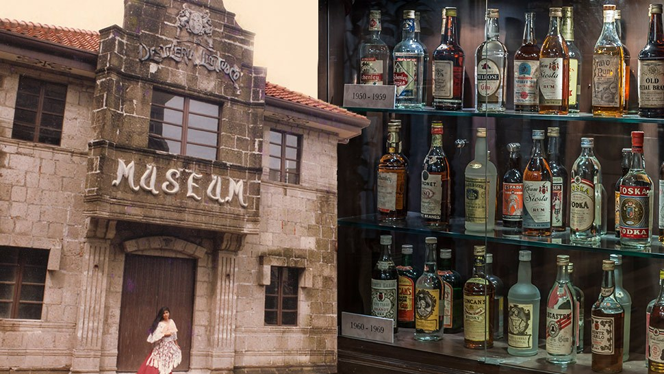
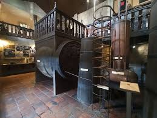
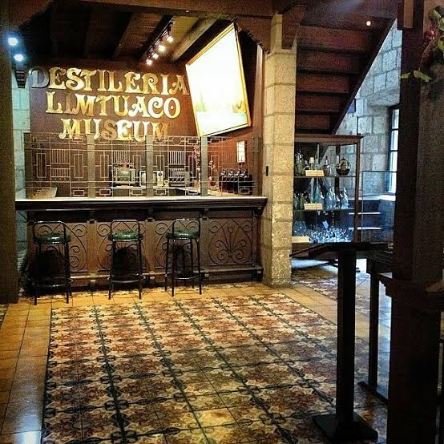

Overview
Founded in 1852, Destileria Limtuaco is the oldest distillery in the Philippines. Today, its restored stone house in Intramuros serves as a museum dedicated to the art of Filipino spirit-making. Visitors can explore antique equipment, vintage bottles, and the colorful legacy of five generations of master distillers.
Photo Gallery



Key Features
- Oldest distillery in the Philippines, established in 1852
- Restored bahay na bato with period architecture
- Displays of antique distillation equipment and memorabilia
- Optional tasting of local spirits like lambanog and liqueur de cacao
Find It Here
User Reviews
Loading average rating...